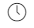

Kylling Chop Suey

sunn
cook
20 min
Ingredienser
500 g kyllingfilet
ca. 2 ss maisstivelse (maizena)
ca. 2 ss olje til steking
1 stk løk
3 stk gulrot
1 ss hakket frisk ingefær
1 pose frossen wokblanding
4 stk vårløk
3 dl hønsebuljong (utblandet)
1 ss soyasaus
ca. 1 ss østerssaus (oyster sauce)
Slik gjør du det
1. Skjær kyllingkjøtt i strimler. Del løk i tynne båter, gulrot og vårløk i tynne skiver. Ha ingrediensene til sausen klar.
2. Vend kyllingstrimlene i maisstivelse og stek dem raskt i olje til de er gjennomstekt.
3. Ta kjøttet ut og fortsett med løk, gulrot og ingefær.
4. Ha kjøttet tilbake i pannen når grønnsakene er omtrent møre og tilsett de hermetiske wokgrønnsakene sammen med vårløk. Hell over hønsebuljong og kok opp.
5. Smak til med soyasaus, østerssaus og eventuelt salt og pepper.